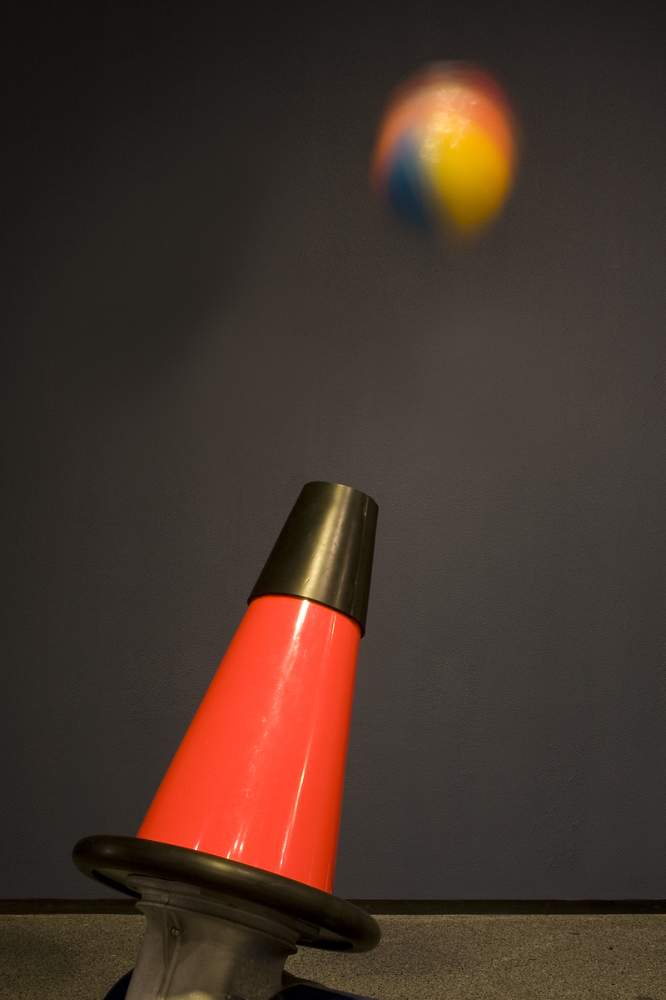

Una pelotita que flota y no se cae del chorro
Prendé un secador de pelo, apuntalo hacia arriba y soltá una pelotita de ping-pong sobre el chorro de aire. La pelotita queda flotando, temblando un poco, pero sin caerse. Y si inclinás despacio el secador, la pelotita lo sigue, como si estuviera atada al chorro. Es uno de los experimentos de mesa más famosos de la física de fluidos, y sorprendentemente, su explicación completa todavía se discute.
Que la pelotita no caiga es lo más fácil de entender. El aire que sube choca con ella y la empuja con una fuerza de arrastre. La NASA la resume en la ecuación del arrastre [1]:
La pelotita sube o baja dentro del chorro hasta encontrar la altura en la que el arrastre iguala su peso (un razonamiento a partir de la ecuación del arrastre). Para una esfera, según la NASA, el coeficiente de arrastre varía entre 0,07 y 0,5, porque depende mucho del número de Reynolds [2].
Lo difícil es entender por qué la pelotita no se va de costado. El Laboratorio de Demostraciones de Física de la Universidad de Maryland advierte que esta demostración suele explicarse mal con el efecto Bernoulli [3]. Según esa explicación incorrecta, la pelota se ubica en el borde del chorro, con una parte en el aire rápido y otra en el aire quieto de al lado; como la presión es menor en el chorro, la diferencia de presión la mantiene adentro [3].
Según la Universidad de Maryland, la explicación correcta tiene que ver con el efecto Coanda [3]. Cuando el chorro pasa junto a la pelota, parte del aire sigue el contorno de la pelota y la abandona recién después de recorrer un buen trecho sobre su superficie [3]. En efecto, la pelota «tira» del aire alrededor de su superficie, y siempre tiene que haber una fuerza de reacción sobre la pelota [3]. Si la pelota se corre hacia un costado del chorro, el aire que se curva sobre ella se desvía hacia afuera, y la reacción la empuja de vuelta hacia el chorro (un razonamiento a partir de esa explicación).
La manguera que se curva: si sostenés una manguera curva con agua, sentís que la manguera te tira en sentido contrario a donde desvía el agua. La pelotita en el borde del chorro es como esa manguera: curva el aire hacia afuera, y el aire la empuja hacia adentro (una imagen propia).
El Laboratorio de Mecánica de Fluidos e Inestabilidades de la Escuela Politécnica Federal de Lausana, en Suiza, propone el problema como proyecto de investigación, con una frase reveladora: la levitación de una pelota de tenis de mesa en el chorro de un secador es un famoso experimento de mesa, pero el origen exacto del fenómeno todavía no está claro [4]. No se sabe, por ejemplo, si el giro de la pelota contribuye de manera significativa con el efecto Magnus, o si la fuerza está dominada por la división asimétrica del chorro al chocar con la esfera, el llamado efecto Coanda [4]. El proyecto propone estudiar primero un problema más simple: un cilindro en un chorro, en dos dimensiones [4].
Pelotas sobre chorros de agua: el mismo fenómeno ocurre con otros fluidos. La página del proyecto de Lausana muestra, junto a la pelota de ping-pong en el secador, una pelota grande que levita sobre un chorro de agua, estudiada por García y Chomaz en 2000 [4].

Una pelotita flota en el chorro de un secador porque el arrastre del aire que sube iguala su peso. Que no se escape de costado es más sutil: la explicación habitual con Bernoulli es incorrecta, y la que se prefiere es que el aire se pega a la pelota y se curva sobre ella, como en el efecto Coanda, y la reacción la empuja hacia el chorro. Cuánto aporta el giro de la pelota es, todavía, una pregunta abierta.
Pregunta para la comunidad: Probá el experimento con una pelotita de ping-pong y después con una de papel aluminio del mismo tamaño, más pesada. ¿A qué altura flota cada una? ¿Qué te dice eso sobre la ecuación del arrastre y la velocidad del chorro a distintas alturas?